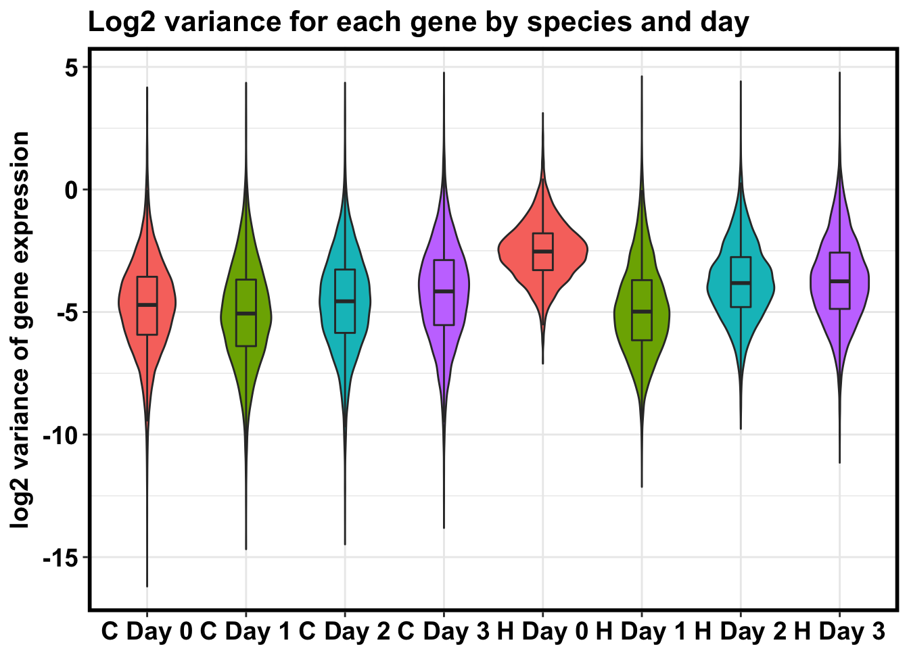

Follow_up_red_var_genes
Lauren Blake
January 10, 2018
- Load in data
- Identify the genes that show a reduction in variation between days 0 and 1 (using F tests)
- General functions for changes in variation
- Reduction in variation
- Evaluating overlap in the categories (compare cluster)
- Evaluating robustness: Use top percentage of genes
- Comparing shared to non-reduced in either species
- Evaluating robustness: Shared reduction in variation (top 10%, 1030 genes) versus background of no reduction
The goal of this script is to explore the possible function(s) of genes that undergo a reduction in variance from days 0 to 1.
Load in data
library("ggplot2")
library("qvalue")
library("RColorBrewer")
library("topGO")Loading required package: BiocGenericsLoading required package: parallel
Attaching package: 'BiocGenerics'The following objects are masked from 'package:parallel':
clusterApply, clusterApplyLB, clusterCall, clusterEvalQ,
clusterExport, clusterMap, parApply, parCapply, parLapply,
parLapplyLB, parRapply, parSapply, parSapplyLBThe following objects are masked from 'package:stats':
IQR, mad, sd, var, xtabsThe following objects are masked from 'package:base':
anyDuplicated, append, as.data.frame, cbind, colMeans,
colnames, colSums, do.call, duplicated, eval, evalq, Filter,
Find, get, grep, grepl, intersect, is.unsorted, lapply,
lengths, Map, mapply, match, mget, order, paste, pmax,
pmax.int, pmin, pmin.int, Position, rank, rbind, Reduce,
rowMeans, rownames, rowSums, sapply, setdiff, sort, table,
tapply, union, unique, unsplit, which, which.max, which.minLoading required package: graphLoading required package: BiobaseWelcome to Bioconductor
Vignettes contain introductory material; view with
'browseVignettes()'. To cite Bioconductor, see
'citation("Biobase")', and for packages 'citation("pkgname")'.Loading required package: GO.dbLoading required package: AnnotationDbiLoading required package: stats4Loading required package: IRangesLoading required package: S4Vectors
Attaching package: 'S4Vectors'The following object is masked from 'package:base':
expand.gridLoading required package: SparseM
Attaching package: 'SparseM'The following object is masked from 'package:base':
backsolve
groupGOTerms: GOBPTerm, GOMFTerm, GOCCTerm environments built.
Attaching package: 'topGO'The following object is masked from 'package:IRanges':
members#library("biomaRt")
library("clusterProfiler")Loading required package: DOSEDOSE v3.4.0 For help: https://guangchuangyu.github.io/DOSE
If you use DOSE in published research, please cite:
Guangchuang Yu, Li-Gen Wang, Guang-Rong Yan, Qing-Yu He. DOSE: an R/Bioconductor package for Disease Ontology Semantic and Enrichment analysis. Bioinformatics 2015, 31(4):608-609clusterProfiler v3.6.0 For help: https://guangchuangyu.github.io/clusterProfiler
If you use clusterProfiler in published research, please cite:
Guangchuang Yu., Li-Gen Wang, Yanyan Han, Qing-Yu He. clusterProfiler: an R package for comparing biological themes among gene clusters. OMICS: A Journal of Integrative Biology. 2012, 16(5):284-287.library("org.Hs.eg.db")library(tidyverse)── Attaching packages ────────────────────────────────── tidyverse 1.2.1 ──✔ tibble 1.4.2 ✔ purrr 0.2.4
✔ tidyr 0.7.2 ✔ dplyr 0.5.0
✔ readr 1.1.1 ✔ stringr 1.3.0
✔ tibble 1.4.2 ✔ forcats 0.2.0── Conflicts ───────────────────────────────────── tidyverse_conflicts() ──
✖ stringr::boundary() masks graph::boundary()
✖ dplyr::collapse() masks IRanges::collapse()
✖ dplyr::combine() masks Biobase::combine(), BiocGenerics::combine()
✖ dplyr::desc() masks IRanges::desc()
✖ tidyr::expand() masks S4Vectors::expand()
✖ dplyr::filter() masks stats::filter()
✖ dplyr::first() masks S4Vectors::first()
✖ dplyr::lag() masks stats::lag()
✖ BiocGenerics::Position() masks ggplot2::Position(), base::Position()
✖ purrr::reduce() masks IRanges::reduce()
✖ dplyr::regroup() masks IRanges::regroup()
✖ dplyr::rename() masks S4Vectors::rename()
✖ dplyr::select() masks AnnotationDbi::select()
✖ purrr::simplify() masks clusterProfiler::simplify()
✖ dplyr::slice() masks IRanges::slice()library(data.table)-------------------------------------------------------------------------data.table + dplyr code now lives in dtplyr.
Please library(dtplyr)!-------------------------------------------------------------------------
Attaching package: 'data.table'The following objects are masked from 'package:dplyr':
between, first, lastThe following object is masked from 'package:purrr':
transposeThe following object is masked from 'package:IRanges':
shiftThe following objects are masked from 'package:S4Vectors':
first, secondlibrary(plyr)-------------------------------------------------------------------------You have loaded plyr after dplyr - this is likely to cause problems.
If you need functions from both plyr and dplyr, please load plyr first, then dplyr:
library(plyr); library(dplyr)-------------------------------------------------------------------------
Attaching package: 'plyr'The following objects are masked from 'package:dplyr':
arrange, count, desc, failwith, id, mutate, rename, summarise,
summarizeThe following object is masked from 'package:purrr':
compactThe following object is masked from 'package:IRanges':
descThe following object is masked from 'package:S4Vectors':
renameThe following object is masked from 'package:graph':
joinlibrary("dplyr")
# Load colors
pal <- c(brewer.pal(9, "Set1"), brewer.pal(8, "Set2"), brewer.pal(12, "Set3"))
# Functions for plots
bjpm<-
theme(
panel.border = element_rect(colour = "black", fill = NA, size = 2),
plot.title = element_text(size = 16, face = "bold"),
axis.text.y = element_text(size = 14,face = "bold",color = "black"),
axis.text.x = element_text(size = 14,face = "bold",color = "black"),
axis.title.y = element_text(size = 14,face = "bold"),
axis.title.x=element_blank(),
legend.text = element_text(size = 14,face = "bold"),
legend.title = element_text(size = 14,face = "bold"),
strip.text.x = element_text(size = 14,face = "bold"),
strip.text.y = element_text(size = 14,face = "bold"),
strip.background = element_rect(colour = "black", size = 2))
bjp<-
theme(
panel.border = element_rect(colour = "black", fill = NA, size = 2),
plot.title = element_text(size = 16, face = "bold"),
axis.text.y = element_text(size = 14,face = "bold",color = "black"),
axis.text.x = element_text(size = 14,face = "bold",color = "black"),
axis.title.y = element_text(size = 14,face = "bold"),
axis.title.x = element_text(size = 14,face = "bold"),
legend.text = element_text(size = 14,face = "bold"),
legend.title = element_text(size = 14,face = "bold"),
strip.text.x = element_text(size = 14,face = "bold"),
strip.text.y = element_text(size = 14,face = "bold"),
strip.background = element_rect(colour = "black", size = 2))
# Load cyclic loess normalized data
cyclicloess_norm <- read.delim("../data/cpm_cyclicloess.txt")# Take the mean of the technical replicates when available
# Day 0 technical replicates
D0_28815 <- as.data.frame(apply(cyclicloess_norm[,5:6], 1, mean))
D0_3647 <- as.data.frame(apply(cyclicloess_norm[,8:9], 1, mean))
D0_3649 <- as.data.frame(apply(cyclicloess_norm[,10:11], 1, mean))
D0_40300 <- as.data.frame(apply(cyclicloess_norm[,12:13], 1, mean))
D0_4955 <- as.data.frame(apply(cyclicloess_norm[,14:15], 1, mean))
# Day 1 technical replicates
D1_20157 <- as.data.frame(apply(cyclicloess_norm[,16:17], 1, mean))
D1_28815 <- as.data.frame(apply(cyclicloess_norm[,21:22], 1, mean))
D1_3647 <- as.data.frame(apply(cyclicloess_norm[,24:25], 1, mean))
D1_3649 <- as.data.frame(apply(cyclicloess_norm[,26:27], 1, mean))
D1_40300 <- as.data.frame(apply(cyclicloess_norm[,28:29], 1, mean))
D1_4955 <- as.data.frame(apply(cyclicloess_norm[,30:31], 1, mean))
# Day 2 technical replicates
D2_20157 <- as.data.frame(apply(cyclicloess_norm[,32:33], 1, mean))
D2_28815 <- as.data.frame(apply(cyclicloess_norm[,37:38], 1, mean))
D2_3647 <- as.data.frame(apply(cyclicloess_norm[,40:41], 1, mean))
D2_3649 <- as.data.frame(apply(cyclicloess_norm[,42:43], 1, mean))
D2_40300 <- as.data.frame(apply(cyclicloess_norm[,44:45], 1, mean))
D2_4955 <- as.data.frame(apply(cyclicloess_norm[,46:47], 1, mean))
# Day 3 technical replicates
D3_20157 <- as.data.frame(apply(cyclicloess_norm[,48:49], 1, mean))
D3_28815 <- as.data.frame(apply(cyclicloess_norm[,53:54], 1, mean))
D3_3647 <- as.data.frame(apply(cyclicloess_norm[,56:57], 1, mean))
D3_3649 <- as.data.frame(apply(cyclicloess_norm[,58:59], 1, mean))
D3_40300 <- as.data.frame(apply(cyclicloess_norm[,60:61], 1, mean))
D3_4955 <- as.data.frame(apply(cyclicloess_norm[,62:63], 1, mean))
# Create a new data frame with all of the combined technical replicates
mean_tech_reps <- cbind(cyclicloess_norm[,1:4], D0_28815, cyclicloess_norm[,7], D0_3647, D0_3649, D0_40300, D0_4955, D1_20157, cyclicloess_norm[,18:20], D1_28815, cyclicloess_norm[,23], D1_3647, D1_3649, D1_40300, D1_4955, D2_20157, cyclicloess_norm[,34:36], D2_28815, cyclicloess_norm[,39], D2_3647, D2_3649, D2_40300, D2_4955, D3_20157, cyclicloess_norm[,50:52], D3_28815, cyclicloess_norm[,55], D3_3647, D3_3649, D3_40300, D3_4955)
colnames(mean_tech_reps) <- c("D0_20157", "D0_20961", "D0_21792", "D0_28162", "D0_28815", "D0_29089", "D0_3647", "D0_3649", "D0_40300", "D0_4955", "D1_20157", "D1_20961", "D1_21792", "D1_28162", "D1_28815", "D1_29089", "D1_3647", "D1_3649", "D1_40300", "D1_4955", "D2_20157", "D2_20961", "D2_21792", "D2_28162", "D2_28815", "D2_29089", "D2_3647", "D2_3649", "D2_40300", "D2_4955", "D3_20157", "D3_20961", "D3_21792", "D3_28162", "D3_28815", "D3_29089", "D3_3647", "D3_3649", "D3_40300", "D3_4955")
dim(mean_tech_reps)[1] 10304 40# Make a column for which are averaged or not
averaged_status <- c(1,1,1,1,2,1,2,2,2,2,2,1,1,1,2,1,2,2,2,2,2,1,1,1,2,1,2,2,2,2,2,1,1,1,2,1,2,2,2,2)
# Find the technical factors for the biological replicates (no technical replicates)
bio_rep_samplefactors <- read.delim("~/Desktop/Endoderm_TC/ashlar-trial/data/samplefactors-filtered.txt", stringsAsFactors=FALSE)
day <- bio_rep_samplefactors$Day
species <- bio_rep_samplefactors$Species
# Make arrays with all the means
labels1 <- array("Chimp Day 0", dim = c(10304, 1))
labels2 <- array("Chimp Day 1", dim = c(10304, 1))
labels3 <- array("Chimp Day 2", dim = c(10304, 1))
labels4 <- array("Chimp Day 3", dim = c(10304, 1))
labels5 <- array("Human Day 0", dim = c(10304, 1))
labels6 <- array("Human Day 1", dim = c(10304, 1))
labels7 <- array("Human Day 2", dim = c(10304, 1))
labels8 <- array("Human Day 3", dim = c(10304, 1))
# Make species-day labels
labels9 <- rbind(labels1, labels2, labels3, labels4, labels5, labels6, labels7, labels8)
labels <- as.numeric(as.factor(labels9))
# Make labels so same days from different species are the same color
labels10 <- rbind(labels1, labels2, labels3, labels4, labels1, labels2, labels3, labels4)
labels10 <- as.numeric(as.factor(labels10))
# Make species labels
labels11 <- array("Chimpanzee", dim = c(41216, 1))
labels12 <- array("Human", dim = c(41216, 1))
labels13 <- rbind(labels11, labels12)
# Calculate the variance for each species-time pair
humans_day0_var <- as.data.frame(apply(as.data.frame(mean_tech_reps[,1:6]),1, var) )
colnames(humans_day0_var) <- c("Variance")
chimps_day0_var <- as.data.frame(apply(as.data.frame(mean_tech_reps[,7:10]),1, var))
colnames(chimps_day0_var) <- c("Variance")
humans_day1_var <- as.data.frame(apply(as.data.frame(mean_tech_reps[,11:16]),1, var))
colnames(humans_day1_var) <- c("Variance")
chimps_day1_var <- as.data.frame(apply(as.data.frame(mean_tech_reps[,17:20]),1, var))
colnames(chimps_day1_var) <- c("Variance")
humans_day2_var <- as.data.frame(apply(as.data.frame(mean_tech_reps[,21:26]),1, var))
colnames(humans_day2_var) <- c("Variance")
chimps_day2_var <- as.data.frame(apply(as.data.frame(mean_tech_reps[,27:30]),1, var))
colnames(chimps_day2_var) <- c("Variance")
humans_day3_var <- as.data.frame(apply(as.data.frame(mean_tech_reps[,31:36]),1, var))
colnames(humans_day3_var) <- c("Variance")
chimps_day3_var <- as.data.frame(apply(as.data.frame(mean_tech_reps[,37:40]),1, var))
colnames(chimps_day3_var) <- c("Variance")
# Take log2 of each data frame
log_chimps_day0_var <- log2(chimps_day0_var)
log_chimps_day1_var <- log2(chimps_day1_var)
log_chimps_day2_var <- log2(chimps_day2_var)
log_chimps_day3_var <- log2(chimps_day3_var)
log_humans_day0_var <- log(humans_day0_var)
log_humans_day1_var <- log2(humans_day1_var)
log_humans_day2_var <- log2(humans_day2_var)
log_humans_day3_var <- log2(humans_day3_var)
# Boxplot of variances gives general trend
HC_var <- rbind(as.data.frame(log_chimps_day0_var), as.data.frame(log_chimps_day1_var), as.data.frame(log_chimps_day2_var), as.data.frame(log_chimps_day3_var), as.data.frame(log_humans_day0_var), as.data.frame(log_humans_day1_var), as.data.frame(log_humans_day2_var), as.data.frame(log_humans_day3_var))
# Make a boxplot of log2(variance of gene expression levels)
HC_var_labels <- cbind(HC_var, labels, labels10)
dim(HC_var_labels)[1] 82432 3p <- ggplot(HC_var_labels, aes(x = factor(labels), y = HC_var))
p <- p + geom_violin(aes(fill = factor(labels10)), show.legend = FALSE) + geom_boxplot(aes(fill = factor(labels10)), show.legend = FALSE, outlier.shape = NA,width=0.2) + theme_bw() + xlab("Species-Day Pair") + ylab("log2 variance of gene expression") + ggtitle("Log2 variance for each gene by species and day")
p <- p + scale_x_discrete(labels=c("1" = "C Day 0", "2" = "C Day 1", "3" = "C Day 2", "4" = "C Day 3", "5" = "H Day 0", "6" = "H Day 1", "7" = "H Day 2", "8" = "H Day 3"))
p + bjpmDon't know how to automatically pick scale for object of type data.frame. Defaulting to continuous.
Identify the genes that show a reduction in variation between days 0 and 1 (using F tests)
## Original code for the qqplots provided by Bryce van de Geijn.
#Output:
#adds a set of qq points to an existing graph
addqqplot=function(pvals, always.plot,density, col_designated){
len = length(pvals)
res=qqplot(-log10((1:len)/(1+len)),pvals,plot.it=F)
return(res)
}
#newqqplot creates a new plot with a set of qq points
#Output:
#creates a new qq plot
newqqplot=function(pvals, always.plot,density){
len = length(pvals)
res=qqplot(-log10((1:len)/(1+len)),pvals,plot.it=F)
}General functions for changes in variation
# 1A) Reduction in variation.
# We need 4 values for each species: day t-1 start and end values and day t start and end values.
find_qqplot_red_chimps <- function(chimp_begin_column_tm1, chimp_end_column_tm1, chimp_begin_column_t, chimp_end_column_t, human_begin_column_tm1, human_end_column_tm1, human_begin_column_t, human_end_column_t, p_val_cutoff){
# Make an array to store the Chimp p-values
chimp_var_pval <- array(NA, dim = c(10304, 1))
for(i in 1:10304){
x <- t(mean_tech_reps[i,chimp_begin_column_tm1:chimp_end_column_tm1])
y <- t(mean_tech_reps[i,chimp_begin_column_t:chimp_end_column_t])
htest <- var.test(x, y, alternative = c("greater"))
chimp_var_pval[i,1] <- htest$p.value
}
hist(chimp_var_pval)
# Test
# chimp_var_pval <- array(NA, dim = c(10304, 1))
# for(i in 1:10304){
# x <- t(mean_tech_reps[i,7:10])
# y <- t(mean_tech_reps[i,17:20])
# htest <- var.test(x, y, alternative = c("greater"))
# chimp_var_pval[i,1] <- htest$p.value
# }
# hist(chimp_var_pval)
# q_chimp_var_adj_pval <- qvalue(chimp_var_pval)
# length(q_chimp_var_adj_pval[which(q_chimp_var_adj_pval < 0.05) , ])
############## For humans
human_var_pval <- array(NA, dim = c(10304, 1))
for(i in 1:10304){
x <- t(mean_tech_reps[i,human_begin_column_tm1:human_end_column_tm1])
y <- t(mean_tech_reps[i,human_begin_column_t:human_end_column_t])
htest <- var.test(x, y, alternative = c("greater"))
human_var_pval[i,1] <- htest$p.value
}
hist(human_var_pval)
# human_var_pval <- array(NA, dim = c(10304, 1))
# for(i in 1:10304){
# x <- t(mean_tech_reps[i,1:6])
# y <- t(mean_tech_reps[i,11:16])
# htest <- var.test(x, y, alternative = c("greater"))
# human_var_pval[i,1] <- htest$p.value
# }
# hist(human_var_pval)
# q_human_var_adj_pval <- qvalue(human_var_pval)$qvalues
# length(q_human_var_adj_pval[which(q_human_var_adj_pval < 0.05) , ])
# 3498
############ Find p-values of the F_statistics
# Make one data frame for corrected pvalues
# chimp_var_adj_pval <- qvalue(chimp_var_pval)
# human_var_adj_pval <- qvalue(human_var_pval)$qvalues
# human_var_pval_adj_pval <- as.data.frame(cbind(human_var_pval, human_var_adj_pval))
# human_var_pval_adj_pval_order <- human_var_pval_adj_pval[order(human_var_pval_adj_pval[,2]),]
# Set p-value (for FDR)
# p_val <- human_var_pval_adj_pval_order[max(which(human_var_pval_adj_pval_order[,2] < 0.05)), 1]
p_val <- p_val_cutoff
var_pval <- as.data.frame(cbind(chimp_var_pval, human_var_pval))
rownames(var_pval) <- rownames(mean_tech_reps)
colnames(var_pval) <- c("Chimpanzee", "Human")
summary(var_pval)
# Make one data frame for uncorrected pvalues
var_pval <- as.data.frame(cbind(chimp_var_pval, human_var_pval))
rownames(var_pval) <- rownames(mean_tech_reps)
colnames(var_pval) <- c("Chimpanzee", "Human")
summary(var_pval)
dim(var_pval)
# Set p-value
# p_val <- 0.05
# P-val < 0.05 for chimps only
num_var_pval_chimps <- var_pval[ which(var_pval[,1] < p_val), ]
# P-val < 0.05 for humans only
num_var_pval_humans <- var_pval[ which(var_pval[,2] < p_val), ]
# A data frame with the # of genes with significant p-values
sig_p_val <- as.data.frame(rbind(dim(num_var_pval_chimps), dim(num_var_pval_humans)))[,1]
# Run for the chimps
num_var_pval_chimps_neg_log <- -log10(var_pval[,1])
res_chimp <- newqqplot(num_var_pval_chimps_neg_log, -1, 100)
# Run for the shared
# Find the p-values of the chimps given that it was significant in the humans
subset_var <- as.data.frame(var_pval[ which(var_pval[,2] < p_val), 1:2])
num_var_pval_chimp_given_human_no_df <- subset_var[,1]
num_var_pval_chimp_given_human <- as.data.frame(subset_var[,1])
num_var_pval_shared_neg_log <- -log10(num_var_pval_chimp_given_human)
res_shared <- addqqplot(num_var_pval_shared_neg_log[,1], -1, 100, pal[3])
# Information for plotting
list_values = as.data.frame(var_pval)
return(list_values)
}Subset genes with a reduction of variation from day 0 to 1 in both species
unadjust_pval <- find_qqplot_red_chimps(7,10,17,20,1,6,11,16, 0.05)

head(unadjust_pval) Chimpanzee Human
ENSG00000000003 0.3534340 0.026268789
ENSG00000000419 0.2500095 0.003807568
ENSG00000000457 0.8035145 0.626871169
ENSG00000000460 0.1262491 0.085875477
ENSG00000001036 0.4632284 0.746323223
ENSG00000001084 0.2029344 0.215312001dim(unadjust_pval)[1] 10304 2Reduction in variation
Human-specific (2008 genes)
subset_humans <- unadjust_pval[which(unadjust_pval[,1] > 0.1 & unadjust_pval[,2] < 0.05),]
# Matrix for which are in the
true_false <- rownames(unadjust_pval) %in% rownames(subset_humans)
true_false <- as.numeric(true_false)
# Merge ENSG with true/false
test_gene <- as.vector(true_false)
names(test_gene) <- rownames(unadjust_pval)
# Run topGO
go_data <- new("topGOdata",
ontology = "BP",
allGenes = test_gene,
geneSel = function(allScore){
return(allScore > 0.01)
},
nodeSize = 5,
annotationFun = annFUN.org,
mapping = "org.Hs.eg.db",
ID = "ensembl")
Building most specific GOs ..... ( 9458 GO terms found. )
Build GO DAG topology .......... ( 13499 GO terms and 31272 relations. )
Annotating nodes ............... ( 9181 genes annotated to the GO terms. )# Perform enrichment test
go_test <- runTest(go_data, algorithm = "weight01", statistic = "fisher")
-- Weight01 Algorithm --
the algorithm is scoring 6227 nontrivial nodes
parameters:
test statistic: fisher
Level 19: 1 nodes to be scored (0 eliminated genes)
Level 18: 3 nodes to be scored (0 eliminated genes)
Level 17: 9 nodes to be scored (11 eliminated genes)
Level 16: 22 nodes to be scored (16 eliminated genes)
Level 15: 62 nodes to be scored (61 eliminated genes)
Level 14: 131 nodes to be scored (225 eliminated genes)
Level 13: 217 nodes to be scored (672 eliminated genes)
Level 12: 350 nodes to be scored (1486 eliminated genes)
Level 11: 552 nodes to be scored (2948 eliminated genes)
Level 10: 711 nodes to be scored (4129 eliminated genes)
Level 9: 847 nodes to be scored (5537 eliminated genes)
Level 8: 862 nodes to be scored (6758 eliminated genes)
Level 7: 856 nodes to be scored (7615 eliminated genes)
Level 6: 746 nodes to be scored (8255 eliminated genes)
Level 5: 477 nodes to be scored (8604 eliminated genes)
Level 4: 249 nodes to be scored (8811 eliminated genes)
Level 3: 110 nodes to be scored (8936 eliminated genes)
Level 2: 21 nodes to be scored (8998 eliminated genes)
Level 1: 1 nodes to be scored (9072 eliminated genes)go_table <- GenTable(go_data, weightFisher = go_test,
orderBy = "weightFisher", ranksOf = "weightFisher",
topNodes = sum(score(go_test) < .01))
go_table GO.ID Term Annotated
1 GO:0006614 SRP-dependent cotranslational protein ta... 61
2 GO:0000184 nuclear-transcribed mRNA catabolic proce... 82
3 GO:0006413 translational initiation 141
4 GO:0019083 viral transcription 133
5 GO:0006364 rRNA processing 200
6 GO:0070125 mitochondrial translational elongation 70
7 GO:0070126 mitochondrial translational termination 71
8 GO:0006120 mitochondrial electron transport, NADH t... 33
9 GO:1902600 hydrogen ion transmembrane transport 58
10 GO:0042776 mitochondrial ATP synthesis coupled prot... 16
11 GO:0038061 NIK/NF-kappaB signaling 91
12 GO:0010972 negative regulation of G2/M transition o... 78
13 GO:0006368 transcription elongation from RNA polyme... 86
14 GO:0002223 stimulatory C-type lectin receptor signa... 79
15 GO:0006367 transcription initiation from RNA polyme... 132
16 GO:0042407 cristae formation 27
17 GO:0000462 maturation of SSU-rRNA from tricistronic... 33
18 GO:0090630 activation of GTPase activity 56
19 GO:0033601 positive regulation of mammary gland epi... 6
20 GO:0061418 regulation of transcription from RNA pol... 64
21 GO:0006122 mitochondrial electron transport, ubiqui... 11
22 GO:0050434 positive regulation of viral transcripti... 37
23 GO:0002181 cytoplasmic translation 50
24 GO:1902036 regulation of hematopoietic stem cell di... 56
25 GO:0051693 actin filament capping 21
26 GO:1902018 negative regulation of cilium assembly 7
27 GO:0051436 negative regulation of ubiquitin-protein... 61
28 GO:0031295 T cell costimulation 25
29 GO:0051437 positive regulation of ubiquitin-protein... 65
30 GO:0038095 Fc-epsilon receptor signaling pathway 97
31 GO:0019321 pentose metabolic process 10
32 GO:0051028 mRNA transport 126
33 GO:0036003 positive regulation of transcription fro... 19
34 GO:0021915 neural tube development 126
35 GO:0090090 negative regulation of canonical Wnt sig... 118
36 GO:0043353 enucleate erythrocyte differentiation 5
37 GO:0003256 regulation of transcription from RNA pol... 5
38 GO:0016569 covalent chromatin modification 426
39 GO:0006744 ubiquinone biosynthetic process 13
40 GO:0042592 homeostatic process 879
41 GO:0043488 regulation of mRNA stability 121
42 GO:0006370 7-methylguanosine mRNA capping 26
43 GO:0030521 androgen receptor signaling pathway 53
44 GO:0031145 anaphase-promoting complex-dependent cat... 67
45 GO:0046794 transport of virus 49
46 GO:0009143 nucleoside triphosphate catabolic proces... 8
47 GO:0021692 cerebellar Purkinje cell layer morphogen... 8
48 GO:0070997 neuron death 192
49 GO:0032981 mitochondrial respiratory chain complex ... 48
50 GO:0048821 erythrocyte development 14
51 GO:0060315 negative regulation of ryanodine-sensiti... 8
52 GO:1904851 positive regulation of establishment of ... 8
53 GO:0043619 regulation of transcription from RNA pol... 8
54 GO:0007276 gamete generation 321
55 GO:0099132 ATP hydrolysis coupled cation transmembr... 34
56 GO:0042276 error-prone translesion synthesis 17
Significant Expected weightFisher
1 39 12.01 5.5e-15
2 42 16.15 1.5e-10
3 60 27.77 2.0e-10
4 55 26.19 3.8e-10
5 66 39.39 9.3e-06
6 29 13.78 2.4e-05
7 29 13.98 3.3e-05
8 17 6.50 4.3e-05
9 26 11.42 0.00018
10 10 3.15 0.00021
11 32 17.92 0.00062
12 25 15.36 0.00064
13 32 16.94 0.00067
14 28 15.56 0.00074
15 42 25.99 0.00075
16 13 5.32 0.00080
17 14 6.50 0.00083
18 21 11.03 0.00146
19 5 1.18 0.00148
20 23 12.60 0.00173
21 7 2.17 0.00177
22 14 7.29 0.00216
23 20 9.85 0.00223
24 20 11.03 0.00367
25 10 4.14 0.00431
26 5 1.38 0.00433
27 21 12.01 0.00485
28 11 4.92 0.00485
29 22 12.80 0.00503
30 30 19.10 0.00543
31 6 1.97 0.00585
32 37 24.81 0.00586
33 7 3.74 0.00586
34 33 24.81 0.00587
35 35 23.24 0.00594
36 4 0.98 0.00632
37 4 0.98 0.00632
38 119 83.89 0.00635
39 7 2.56 0.00637
40 172 173.10 0.00638
41 35 23.83 0.00639
42 11 5.12 0.00694
43 17 10.44 0.00706
44 22 13.19 0.00752
45 14 9.65 0.00760
46 5 1.58 0.00761
47 4 1.58 0.00763
48 33 37.81 0.00772
49 17 9.45 0.00782
50 7 2.76 0.00967
51 5 1.58 0.00969
52 5 1.58 0.00969
53 5 1.58 0.00969
54 64 63.21 0.00975
55 12 6.70 0.00986
56 8 3.35 0.00988sig.genes <- sigGenes(go_data)
sig.genes <- sigGenes(go_data)
goresults["GO:0090090"] # DVL2, PSMC1, PSMA1, DACT1, CDH2$<NA>
NULLgoresults["GO:0043353"]$<NA>
NULLChimp-specific (962 genes)
subset_chimps <- unadjust_pval[which(unadjust_pval[,1] < 0.1 & unadjust_pval[,2] > 0.05),]
# Matrix for which are in the
true_false <- rownames(unadjust_pval) %in% rownames(subset_chimps)
true_false <- as.numeric(true_false)
# Merge ENSG with true/false
test_gene <- as.vector(true_false)
names(test_gene) <- rownames(unadjust_pval)
# Run topGO
go_data <- new("topGOdata",
ontology = "BP",
allGenes = test_gene,
geneSel = function(allScore){
return(allScore > 0.01)
},
nodeSize = 5,
annotationFun = annFUN.org,
mapping = "org.Hs.eg.db",
ID = "ensembl")
Building most specific GOs ..... ( 9458 GO terms found. )
Build GO DAG topology .......... ( 13499 GO terms and 31272 relations. )
Annotating nodes ............... ( 9181 genes annotated to the GO terms. )# Perform enrichment test
go_test <- runTest(go_data, algorithm = "weight01", statistic = "fisher")
-- Weight01 Algorithm --
the algorithm is scoring 5418 nontrivial nodes
parameters:
test statistic: fisher
Level 18: 3 nodes to be scored (0 eliminated genes)
Level 17: 7 nodes to be scored (0 eliminated genes)
Level 16: 17 nodes to be scored (16 eliminated genes)
Level 15: 46 nodes to be scored (46 eliminated genes)
Level 14: 99 nodes to be scored (190 eliminated genes)
Level 13: 169 nodes to be scored (562 eliminated genes)
Level 12: 283 nodes to be scored (1364 eliminated genes)
Level 11: 446 nodes to be scored (2856 eliminated genes)
Level 10: 595 nodes to be scored (4052 eliminated genes)
Level 9: 735 nodes to be scored (5478 eliminated genes)
Level 8: 741 nodes to be scored (6716 eliminated genes)
Level 7: 792 nodes to be scored (7559 eliminated genes)
Level 6: 677 nodes to be scored (8208 eliminated genes)
Level 5: 442 nodes to be scored (8588 eliminated genes)
Level 4: 238 nodes to be scored (8801 eliminated genes)
Level 3: 105 nodes to be scored (8932 eliminated genes)
Level 2: 22 nodes to be scored (8999 eliminated genes)
Level 1: 1 nodes to be scored (9071 eliminated genes)go_table <- GenTable(go_data, weightFisher = go_test,
orderBy = "weightFisher", ranksOf = "weightFisher",
topNodes = sum(score(go_test) < .01))
go_table GO.ID Term Annotated
1 GO:0007269 neurotransmitter secretion 71
2 GO:0035864 response to potassium ion 6
3 GO:0032049 cardiolipin biosynthetic process 7
4 GO:0060548 negative regulation of cell death 542
5 GO:1900182 positive regulation of protein localizat... 82
6 GO:0071397 cellular response to cholesterol 9
7 GO:0051646 mitochondrion localization 25
8 GO:2000630 positive regulation of miRNA metabolic p... 5
9 GO:0072378 blood coagulation, fibrin clot formation 5
10 GO:0007028 cytoplasm organization 5
11 GO:0010623 programmed cell death involved in cell d... 5
12 GO:1904749 regulation of protein localization to nu... 5
13 GO:0051126 negative regulation of actin nucleation 5
14 GO:1904526 regulation of microtubule binding 5
15 GO:0035627 ceramide transport 5
16 GO:0000963 mitochondrial RNA processing 5
17 GO:0042780 tRNA 3'-end processing 5
18 GO:1900087 positive regulation of G1/S transition o... 20
19 GO:0042108 positive regulation of cytokine biosynth... 20
20 GO:0050651 dermatan sulfate proteoglycan biosynthet... 8
Significant Expected weightFisher
1 8 6.63 0.00078
2 4 0.56 0.00097
3 4 0.65 0.00210
4 54 50.59 0.00392
5 11 7.65 0.00454
6 4 0.84 0.00648
7 5 2.33 0.00701
8 3 0.47 0.00702
9 3 0.47 0.00702
10 3 0.47 0.00702
11 3 0.47 0.00702
12 3 0.47 0.00702
13 3 0.47 0.00702
14 3 0.47 0.00702
15 3 0.47 0.00702
16 3 0.47 0.00702
17 3 0.47 0.00702
18 6 1.87 0.00803
19 6 1.87 0.00803
20 4 0.75 0.00867sig.genes <- sigGenes(go_data)Genes that don’t show a reduction in variation in both species (2412 genes)
This analysis combines genes from the human-specific and chimp-specific categories from above.
# Sharing based on 2 p-value cutoffs
subset_pval <- unadjust_pval[which(unadjust_pval[,1] > 0.1 & unadjust_pval[,2] < 0.05),]
subset_pval2 <- unadjust_pval[which(unadjust_pval[,1] < 0.05 & unadjust_pval[,2] > 0.1),]
getwd()[1] "/Users/laurenblake/Desktop/Endoderm_TC/ashlar-trial/analysis"write.table(subset_pval, "/Users/laurenblake/Desktop/human_only.txt", quote = FALSE)
write.table(subset_pval2, "/Users/laurenblake/Desktop/chimps_only.txt", quote = FALSE)
subset_pval3 <- rbind(subset_pval, subset_pval2)
dim(subset_pval3)[1] 2412 2subset_pval4 <- unique(subset_pval3)
dim(subset_pval4)[1] 2412 2# Matrix for which are in the
true_false <- rownames(unadjust_pval) %in% rownames(subset_pval4)
summary(true_false) Mode FALSE TRUE
logical 7892 2412 true_false <- as.numeric(true_false)
# Merge ENSG with true/false
test_gene <- as.vector(true_false)
names(test_gene) <- rownames(unadjust_pval)
# Run topGO
go_data <- new("topGOdata",
ontology = "BP",
allGenes = test_gene,
geneSel = function(allScore){
return(allScore > 0.01)
},
nodeSize = 5,
annotationFun = annFUN.org,
mapping = "org.Hs.eg.db",
ID = "ensembl")
Building most specific GOs ..... ( 9458 GO terms found. )
Build GO DAG topology .......... ( 13499 GO terms and 31272 relations. )
Annotating nodes ............... ( 9181 genes annotated to the GO terms. )# Perform enrichment test
go_test <- runTest(go_data, algorithm = "weight01", statistic = "fisher")
-- Weight01 Algorithm --
the algorithm is scoring 6447 nontrivial nodes
parameters:
test statistic: fisher
Level 19: 1 nodes to be scored (0 eliminated genes)
Level 18: 3 nodes to be scored (0 eliminated genes)
Level 17: 9 nodes to be scored (11 eliminated genes)
Level 16: 23 nodes to be scored (16 eliminated genes)
Level 15: 65 nodes to be scored (61 eliminated genes)
Level 14: 134 nodes to be scored (229 eliminated genes)
Level 13: 223 nodes to be scored (679 eliminated genes)
Level 12: 365 nodes to be scored (1488 eliminated genes)
Level 11: 571 nodes to be scored (2961 eliminated genes)
Level 10: 744 nodes to be scored (4159 eliminated genes)
Level 9: 880 nodes to be scored (5583 eliminated genes)
Level 8: 894 nodes to be scored (6784 eliminated genes)
Level 7: 895 nodes to be scored (7640 eliminated genes)
Level 6: 766 nodes to be scored (8256 eliminated genes)
Level 5: 483 nodes to be scored (8607 eliminated genes)
Level 4: 256 nodes to be scored (8816 eliminated genes)
Level 3: 112 nodes to be scored (8936 eliminated genes)
Level 2: 22 nodes to be scored (8998 eliminated genes)
Level 1: 1 nodes to be scored (9072 eliminated genes)go_table <- GenTable(go_data, weightFisher = go_test,
orderBy = "weightFisher", ranksOf = "weightFisher",
topNodes = sum(score(go_test) < .01))
go_table GO.ID Term Annotated
1 GO:0006614 SRP-dependent cotranslational protein ta... 61
2 GO:0000184 nuclear-transcribed mRNA catabolic proce... 82
3 GO:0019083 viral transcription 133
4 GO:0006413 translational initiation 141
5 GO:0006364 rRNA processing 200
6 GO:0070125 mitochondrial translational elongation 70
7 GO:0042776 mitochondrial ATP synthesis coupled prot... 16
8 GO:0070126 mitochondrial translational termination 71
9 GO:0006120 mitochondrial electron transport, NADH t... 33
10 GO:0006122 mitochondrial electron transport, ubiqui... 11
11 GO:2000394 positive regulation of lamellipodium mor... 7
12 GO:1902600 hydrogen ion transmembrane transport 58
13 GO:0006367 transcription initiation from RNA polyme... 132
14 GO:0002223 stimulatory C-type lectin receptor signa... 79
15 GO:0099132 ATP hydrolysis coupled cation transmembr... 34
16 GO:0002181 cytoplasmic translation 50
17 GO:0036003 positive regulation of transcription fro... 19
18 GO:0090630 activation of GTPase activity 56
19 GO:0050434 positive regulation of viral transcripti... 37
20 GO:0038061 NIK/NF-kappaB signaling 91
21 GO:0010972 negative regulation of G2/M transition o... 78
22 GO:0006356 regulation of transcription from RNA pol... 25
23 GO:0035864 response to potassium ion 6
24 GO:0033601 positive regulation of mammary gland epi... 6
25 GO:0006368 transcription elongation from RNA polyme... 86
26 GO:0000462 maturation of SSU-rRNA from tricistronic... 33
27 GO:0042407 cristae formation 27
28 GO:0043488 regulation of mRNA stability 121
29 GO:0016569 covalent chromatin modification 426
30 GO:0016032 viral process 560
31 GO:0021915 neural tube development 126
32 GO:0031295 T cell costimulation 25
33 GO:0045815 positive regulation of gene expression, ... 45
34 GO:0006283 transcription-coupled nucleotide-excisio... 63
35 GO:0038095 Fc-epsilon receptor signaling pathway 97
36 GO:0042276 error-prone translesion synthesis 17
37 GO:0061418 regulation of transcription from RNA pol... 64
38 GO:0042769 DNA damage response, detection of DNA da... 35
39 GO:0051028 mRNA transport 126
40 GO:0051693 actin filament capping 21
41 GO:1902018 negative regulation of cilium assembly 7
Significant Expected weightFisher
1 42 14.42 4.4e-14
2 45 19.38 9.4e-10
3 61 31.44 7.9e-09
4 66 33.33 1.2e-08
5 72 47.27 7.0e-06
6 31 16.55 0.00011
7 11 3.78 0.00016
8 30 16.78 0.00038
9 17 7.80 0.00046
10 8 2.60 0.00079
11 6 1.65 0.00097
12 28 13.71 0.00131
13 46 31.20 0.00133
14 31 18.67 0.00138
15 15 8.04 0.00195
16 21 11.82 0.00240
17 8 4.49 0.00247
18 23 13.24 0.00277
19 15 8.75 0.00279
20 34 21.51 0.00285
21 27 18.44 0.00292
22 10 5.91 0.00354
23 5 1.42 0.00354
24 5 1.42 0.00354
25 35 20.33 0.00401
26 14 7.80 0.00439
27 13 6.38 0.00462
28 41 28.60 0.00484
29 132 100.69 0.00519
30 180 132.36 0.00528
31 38 29.78 0.00573
32 12 5.91 0.00665
33 20 10.64 0.00672
34 24 14.89 0.00708
35 34 22.93 0.00713
36 9 4.02 0.00839
37 24 15.13 0.00884
38 15 8.27 0.00923
39 42 29.78 0.00945
40 11 4.96 0.00992
41 5 1.65 0.00998sig.genes <- sigGenes(go_data)Evaluating overlap in the categories (compare cluster)
# Sharing based on 2 p-value cutoffs
subset_pval <- unadjust_pval[which(unadjust_pval[,1] < 0.1 & unadjust_pval[,2] < 0.05),]
subset_pval2 <- unadjust_pval[which(unadjust_pval[,1] < 0.05 & unadjust_pval[,2] < 0.1),]
subset_pval3 <- rbind(subset_pval, subset_pval2)
dim(subset_pval3)[1] 561 2subset_pval4 <- unique(subset_pval3)
dim(subset_pval4)[1] 391 2true_false_shared <- rownames(unadjust_pval) %in% rownames(subset_pval4)
# Non-sharing based on 2 p-value cutoffs
subset_pval <- unadjust_pval[which(unadjust_pval[,1] > 0.1 & unadjust_pval[,2] < 0.05),]
subset_pval2 <- unadjust_pval[which(unadjust_pval[,1] < 0.05 & unadjust_pval[,2] > 0.1),]
subset_pval3 <- rbind(subset_pval, subset_pval2)
dim(subset_pval3)[1] 2412 2subset_pval4 <- unique(subset_pval3)
dim(subset_pval4)[1] 2412 2# Matrix for which are in the
true_false_non_shared <- rownames(unadjust_pval) %in% rownames(subset_pval4)
# Use compare cluster
test_df <- data.frame(ensg = rownames(unadjust_pval), group = true_false_shared, othergroup = true_false_non_shared)
make_test <- test_df[which(test_df$group == "TRUE" | test_df$othergroup == "TRUE"), ]
#test_df[,2] <- as.numeric(test_df[,2])
#test_df[,3] <- as.numeric(test_df[,3])
#test_df[test_df[,2] > 1.5] <- 0
#test_df[test_df[,3] > 1.5] <- 0
#xx.formula <- compareCluster(ensg~group+othergroup, data=test_df, fun="enrichGO", universe = test_df$ensg)
#mydf <- data.frame(Entrez=c('1', '100', '1000', '100101467',
# '100127206', '100128071'),
# group = c('A', 'A', 'A', 'B', 'B', 'B'),
# othergroup = c('good', 'good', 'bad', 'bad', 'good', 'bad'))
#xx.formula <- compareCluster(Entrez~group+othergroup, data=mydf, fun='enrichGO')
#summary(xx.formula)
formula_res <- compareCluster(ensg~group+othergroup, data=make_test, fun="enrichGO", universe = test_df$ensg,
OrgDb = org.Hs.eg.db,
keyType = 'ENSEMBL',
ont = "BP",
pAdjustMethod = "fdr",
qvalueCutoff = 0.05,
maxGSSize = 3000,
minGSSize = 3)
formula_res %>%as.data.frame()%>%select(-geneID)->enrichment.res
row.names(enrichment.res)=NULL
summary(enrichment.res) Cluster group othergroup ID
FALSE.TRUE:69 Length:69 Length:69 Length:69
TRUE.FALSE: 0 Class :character Class :character Class :character
Mode :character Mode :character Mode :character
Description GeneRatio BgRatio
Length:69 Length:69 Length:69
Class :character Class :character Class :character
Mode :character Mode :character Mode :character
pvalue p.adjust qvalue
Min. :0.000e+00 Min. :0.000e+00 Min. :0.000e+00
1st Qu.:1.199e-07 1st Qu.:4.917e-05 1st Qu.:4.815e-05
Median :1.400e-05 Median :2.954e-03 Median :2.892e-03
Mean :8.619e-05 Mean :1.134e-02 Mean :1.111e-02
3rd Qu.:1.735e-04 3rd Qu.:2.463e-02 3rd Qu.:2.412e-02
Max. :4.645e-04 Max. :4.970e-02 Max. :4.866e-02
Count
Min. : 11.0
1st Qu.: 53.0
Median :100.0
Mean :161.9
3rd Qu.:189.0
Max. :782.0 #Plot
my_breaks = c(0.01,10^-10,10^-20, 10^-30)
dotplot(formula_res)+bjp+theme(axis.text.x = element_text(angle = 60, hjust = 1))+
scale_color_gradient(low ="#f70028",high = "#0200ff",trans="log",breaks = my_breaks, labels = my_breaks)Scale for 'colour' is already present. Adding another scale for
'colour', which will replace the existing scale.
#write.table(test_df, "/Users/laurenblake/Dropbox/Endoderm TC/GO_Enrichment/test_df.txt")